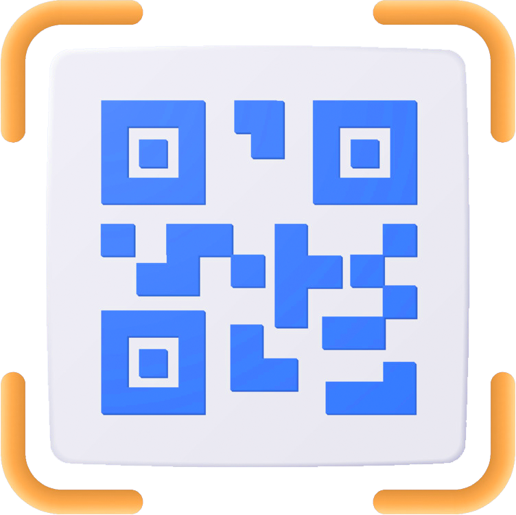
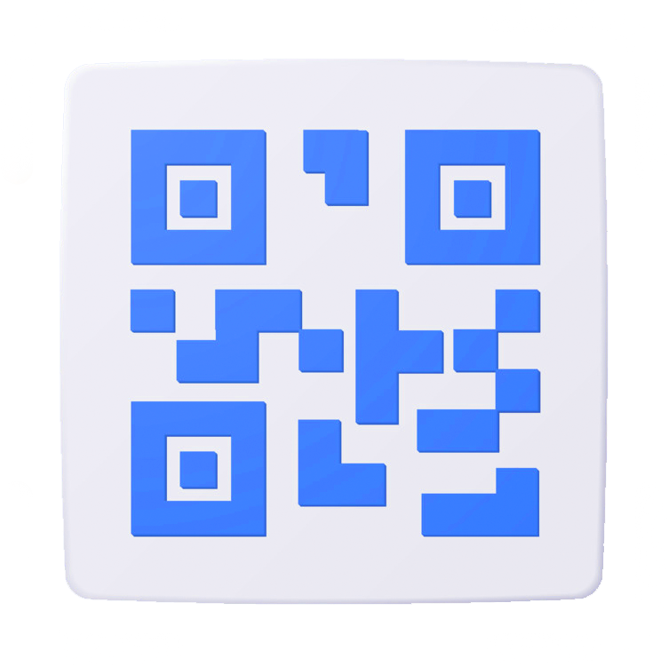

<ion-header>
  <mat-progress-bar mode="indeterminate"></mat-progress-bar>
  <ion-toolbar color="tertiary">
    <ion-buttons color="dark" slot="start">
      <ion-back-button></ion-back-button>
    </ion-buttons>
    <ion-title>QR</ion-title>
  </ion-toolbar>
</ion-header>


<ion-content class="ion-padding ion-text-center">

  <!-- *********SEGMENTS*********************** -->
  <ion-segment [(ngModel)]="segment" value="pizza" mode="ios">

    <ion-segment-button value="scan">
      <ion-label>Scan Qr</ion-label>
    </ion-segment-button>

    <ion-segment-button value="generate">
      <ion-label>Generate Qr</ion-label>
    </ion-segment-button>

  </ion-segment>


  <!-- ************Scan QR************** -->
  <div class="segment" *ngIf="segment === 'scan'">
    <div class="segment-content">
      
      <h6 class="scan-label">Escanea o selecciona una imagen para obtener su valor</h6>
      <div class="submit">
      <ion-row>
        <ion-col size="6">
          <ion-button color="tertiary" (click)="startScan()" id="submit" expand="block">
            Scan
            <ion-icon slot="end" name="scan-outline"></ion-icon>
          </ion-button>
        </ion-col>
      </ion-row>
      <ion-row>
        <ion-col size="6">
          <ion-button color="tertiary" (click)="readBarcodeFromImage()" id="submit" expand="block">
            Select
            <ion-icon slot="end" name="image-outline"></ion-icon>
          </ion-button>
        </ion-col>
      </ion-row>
    </div>

        <!-- ********Scan result*************** -->
         <ion-item class="result" *ngIf="scanResult" lines="none">
          <ion-label id="resulLabel">
            <p id="resultP">Scan result</p>
            <div id="resulDiv">{{scanResult}}</div>
          </ion-label>
          <ion-buttons slot="end">

            <ion-button *ngIf="isUrl()"  color="tertiary" (click)=" openCapacitorSite()">
              <ion-icon  slot="icon-only" name="globe-outline"></ion-icon>
            </ion-button>


            <ion-button color="tertiary" (click)=" writeToClipboard()">
              <ion-icon  slot="icon-only" name="copy-outline"></ion-icon>
            </ion-button>
          </ion-buttons>
         </ion-item>


    </div>
  </div>

  <!-- ********Generate QR*************** -->
  <div *ngIf="segment === 'generate'">
    <div class="segment-content">

      <div id="qrImage">
        <div class="d-flex-center">
          <div class="d-flex-center qr-wrapper">
            <qr-code *ngIf="qrText" [value]="qrText" size="190" errorCorrectionLevel="M" />
            
          </div>

        </div>
          <div class="ion-padding-top">
              {{qrText}}
          </div>
      </div>
      <ion-item class="item">
        <ion-textarea label="Escribe algo para convertirlo en QR " labelPlacement="floating" fill="outline" placeholder="Enter text" [(ngModel)]="qrText" rows="2" [autoGrow]="true"></ion-textarea>
      </ion-item>

      <!-- ******* Share QR************ -->

      <ion-button color="tertiary" (click)="captureScreen()" *ngIf="qrText" class="submit ion-margin-top" expand="block">
        Share
        <ion-icon slot="end" name="share-social-outline"></ion-icon>
      </ion-button>
    </div>
  </div>

</ion-content>